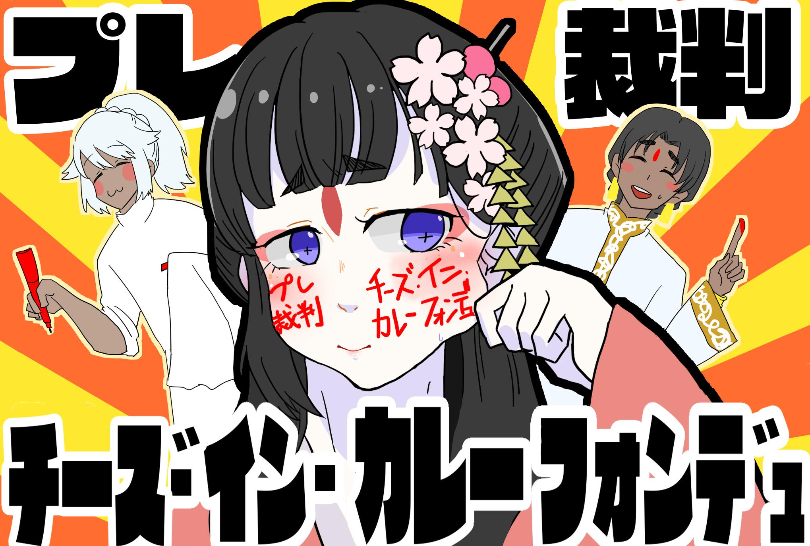
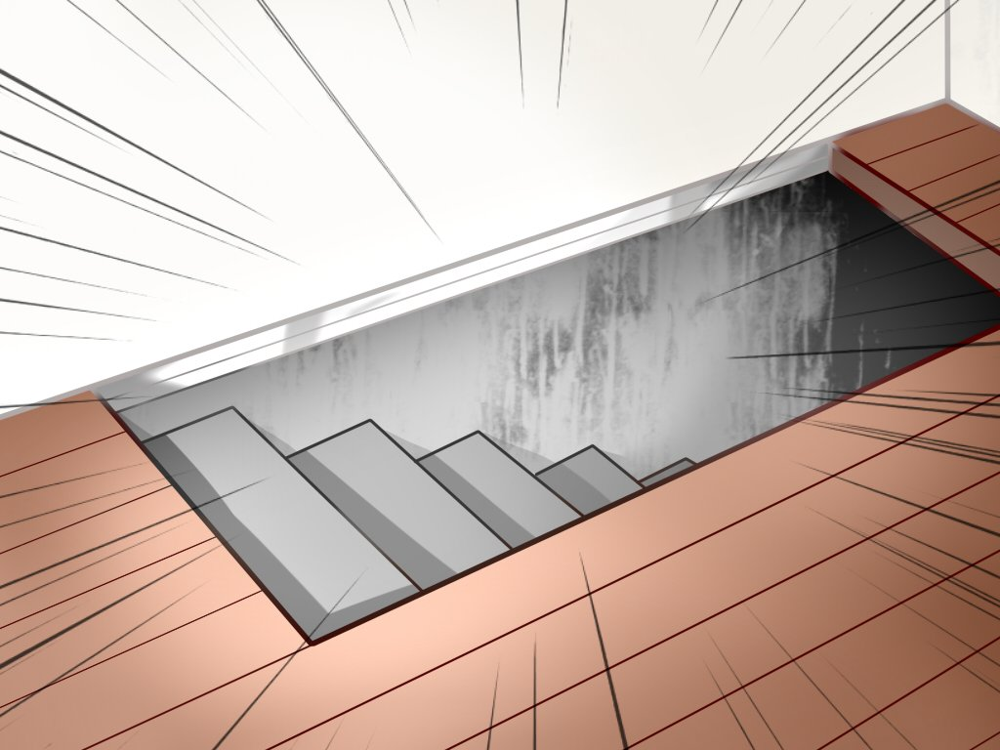
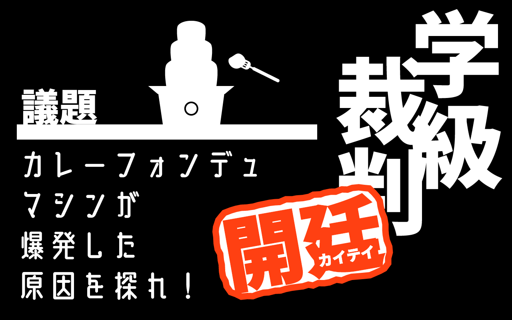
【A-1 証言】アニク
13時半ごろ、カレーフォンデュを楽しもうとマシンに近づいたところ、突然不穏な音が鳴り出し爆発した。マシンに触れる前だったので、自分の行動が原因ではないと思う。
【A-2 同意】エク
自分もその音を聞いた。アニクはまだカレーフォンデュをはじめていなかったので、彼が原因とは考えられない。
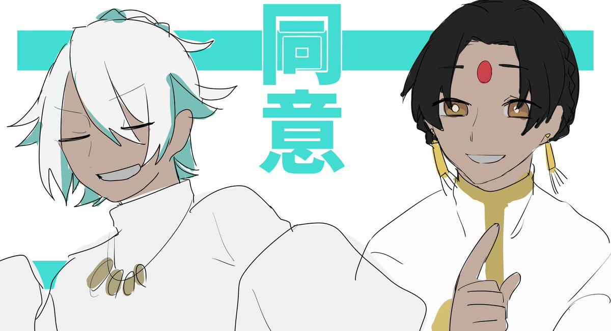
【B-1 疑問】アーシャ
事件発生直後に集まった際爆発に心当たりのある人は一人もいなかった。よって生徒の誰かが犯人だとは考えにくい。とはいえマシンが理由もなくひとりでに爆発するとも思えない。一体何が原因なんだろう。
【C-1 閃き】ナラクーバラ
自分たちを狙った外部の侵入者が、機械に爆弾をしかけたのではないだろうか？
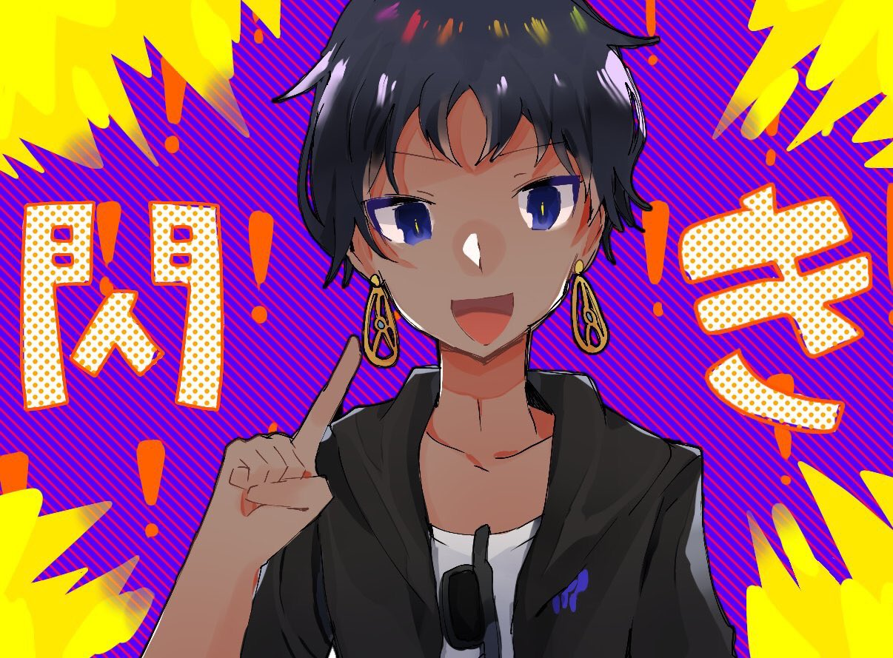
【C-2 閃き】ハナコ
カレーフォンデュマシンにはあらかじめ通信器が取り付けられていて、アニクがその存在に気づきそうになったから遠隔操作で爆発させたのではないだろうか。
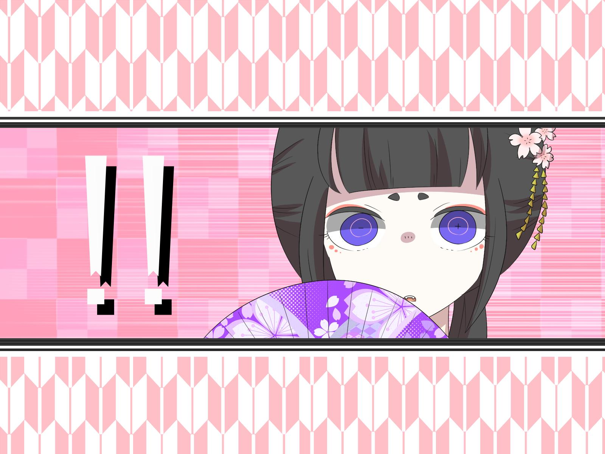
【D-1 反論】プレム
現在学校の敷地は外部の人も入場自由になっているが、寮エリアには電子生徒手帳をかざさないと入れない。監視カメラが不審者を捉えれば警報が鳴り、アディティが木っ端微塵するからありえない。
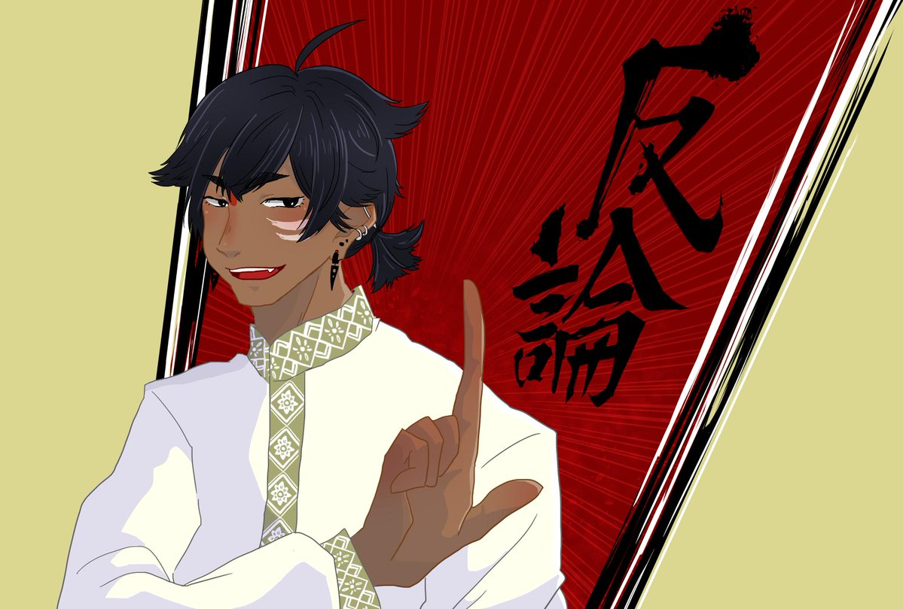
【D-2 反論】ラーフル
機械について一通り調べたがカレーフォンデュマシンに怪しい通信装置などはついていなかった。外部から遠隔操作されて爆発したわけでもなさそうだ。
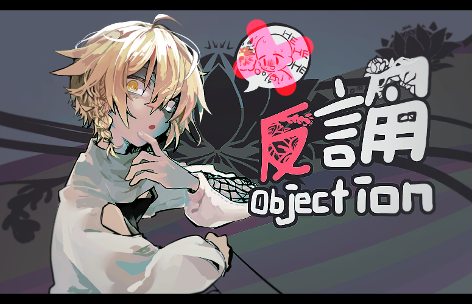
【E-1 コトダマ・被害者1】
事件発生直後アニクはとても驚いた様子だった。カレーで服が汚れていたが幸い火傷はなく、怪我もなかった。
【E-2 コトダマ・被害者2】
事件発生直後のエクはカレーまみれだった。よくみると腕から血を流しており、何かで切ってしまったみたいだ。
【E-3コトダマ・現場1】
爆発したマシンの破片が散らばっている。割れた部分が鋭利になっているものもあり、とても危険だ。
【E-4 コトダマ・現場2】
カレーが至る所に散っていて掃除が大変そう。
【E-5 コトダマ・現場3】
マシンの注意書きに「故障の原因となるため固形物を入れないでください」と書いてある。
【F-1 コトダマ・現場4】
カレーを拭き取ったタオルにチーズがこびりついている。
【F-2 コトダマ・メイドの証言】
カレーフォンデュマシンの管理はメイドのアディティがしていた。朝の10時に清掃とメンテナンスをしたが、特に異常はなかったらしい
【F-3 コトダマ・図書館1】
新聞に気になることが書いてあった
『先日発売されたカレーフォンデュマシンに固形物を入れ爆破させる事故が多発しています。製作会社は決して具材を入れないように注意を呼びかけ…』
【J-1 証言】モハメド
昼食後、カフェテリアを出たところで入れ違いでハナコが入って行った。すれ違いざまにあいさつをしたし、間違いない。自分が出た時、カフェテリアに人はいなかった。確か13時ごろだったと思う。
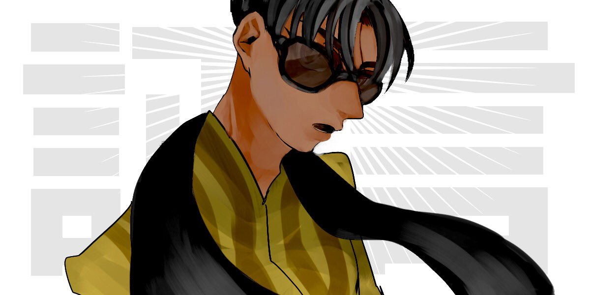
【J-2 反論】ハナコ
チーズは熱を加えると溶けてとろとろになるはず。チーズが原因で詰まりがおこりマシンが壊れるとは考えられない。
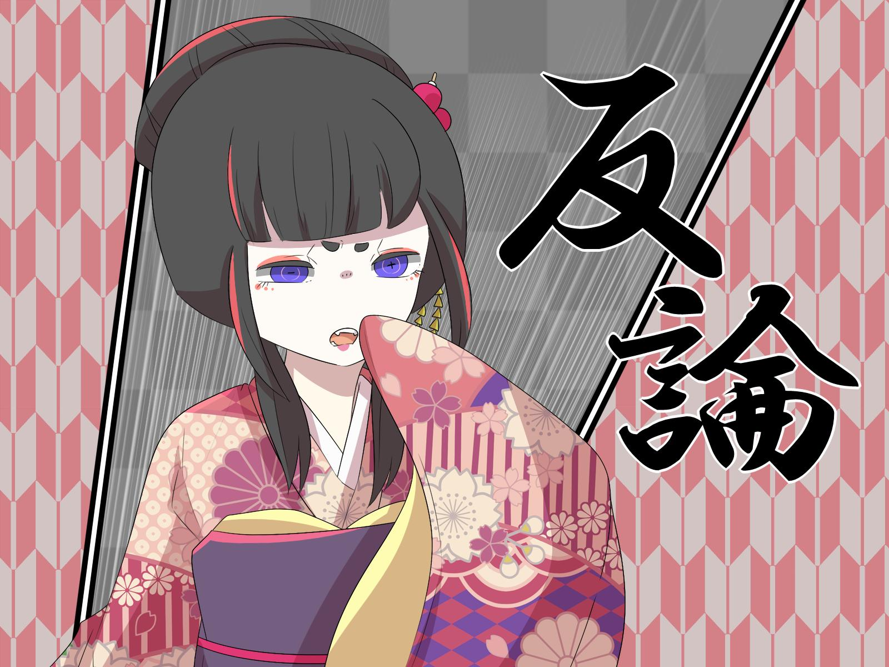
【J-3 閃き】カマル
そのチーズ…もしかしてプロセスチーズだったんじゃないだろうか。
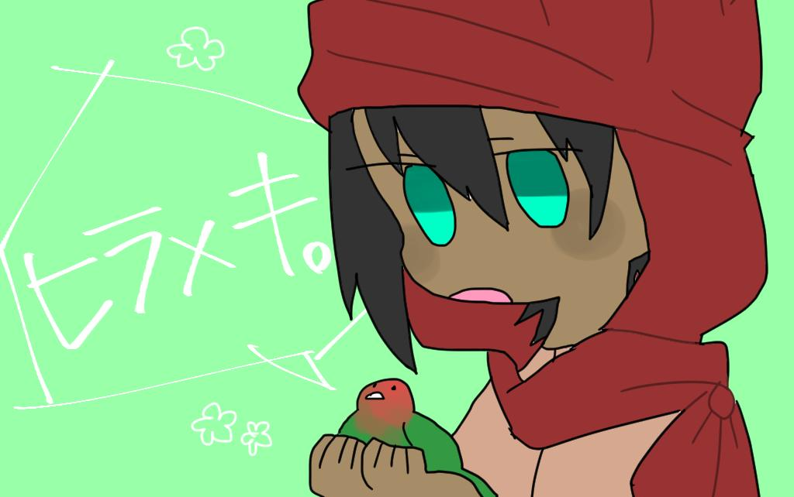
【J-4 疑問】パラヴィ
プロセスチーズってなんですか？
【K-1 コトダマ・図書館2】
チーズ料理のレシピ本がある。読み進めていると、チーズの種類について書かれたコラムを見つけた。 内容は以下の通り。 「ナチュラルチーズは熱を加えると溶けるが、プロセスチーズは熱を加えても溶けない。調理する際には注意が必要である」
【L-1 コトダマ・厨房1】
厨房には様々な種類のチーズが置かれており、プロセスチーズもナチュラルチーズもある。どれもインド産でありパッケージはヒンディー語かサンスクリット語で書かれている。
【L-2コトダマ・職員室】
プレムの引き出しに生徒名簿が入っていた。故郷や使用言語についても書かれており、それによるとヒンディー語もサンスクリット語も使えないのはパラヴィ、ハナコ、ヌール、カルロの四人だ。
【L-3 コトダマ・厨房2】 (日本語非可読者)
冷蔵庫にメモが貼ってある。日本語らしく、なんて書かれているかはわからない。
【L-4 コトダマ・厨房3】(日本語可読者)
冷蔵庫にメモが貼ってある。日本語で書かれたカレーのレシピだ。
『……最後にチーズを沢山入れ、いい感じに溶けたら完成！』
【O-1 推理】カルロ
ハナコはパッケージに書かれている文字が読めずにうっかり溶けないプロセスチーズをマシンに入れてしまい、マシンがつまり爆発を引き起こしたのではないか。
【パニックトークアクション 開始】
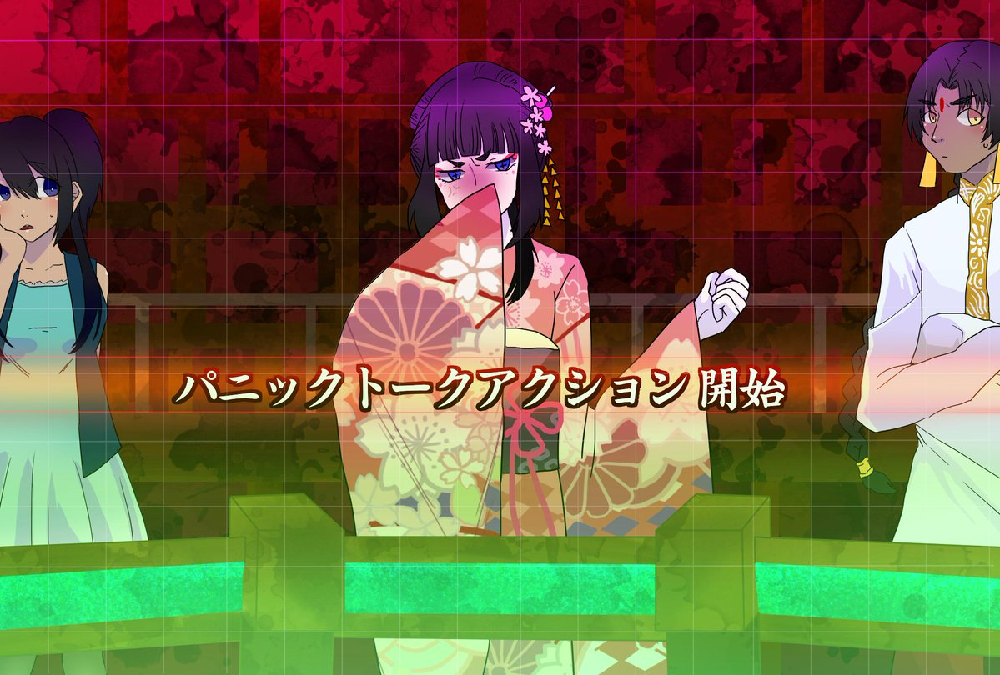
【PTA1】
間違えるわけないやろ 私はチーズが好きなんや
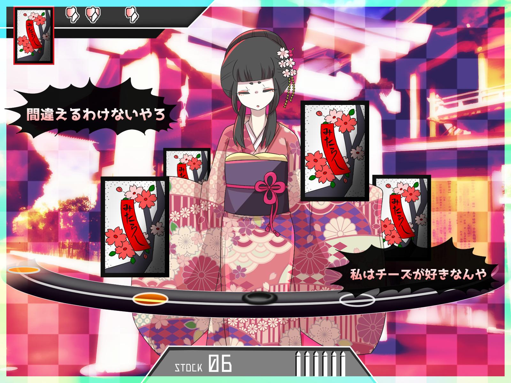
【PTA2】
僕は悪くない カレーにチーズは合うねん
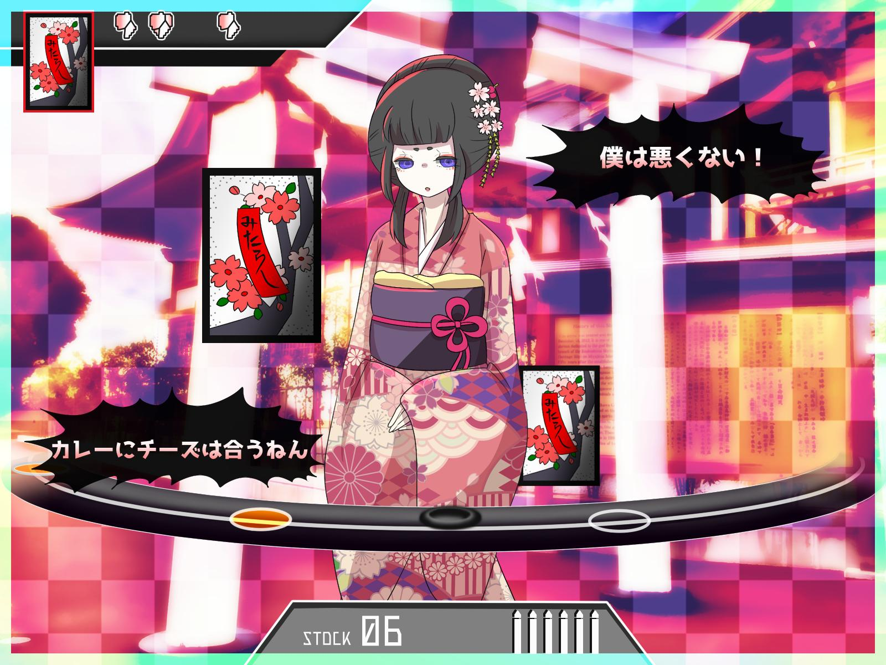
【PTA3】
｢ワシがいれたんはナチュラルチーズやもん！｣
ナチュラルチーズ でも だめ やぞ
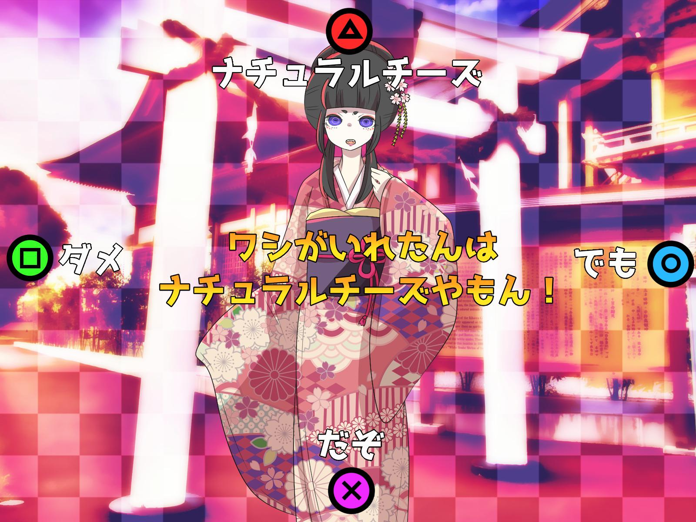
【P-1 論破】コマチ
チーズは熱を加えたら確かに柔らかくなるが、液体と言えるほど柔らかくならない。溶けるタイプのナチュラルチーズであっても循環するフォンデュマシンに大量に入れるとかならず詰まって故障を引きおこす。どんなチーズでもアウトだ。
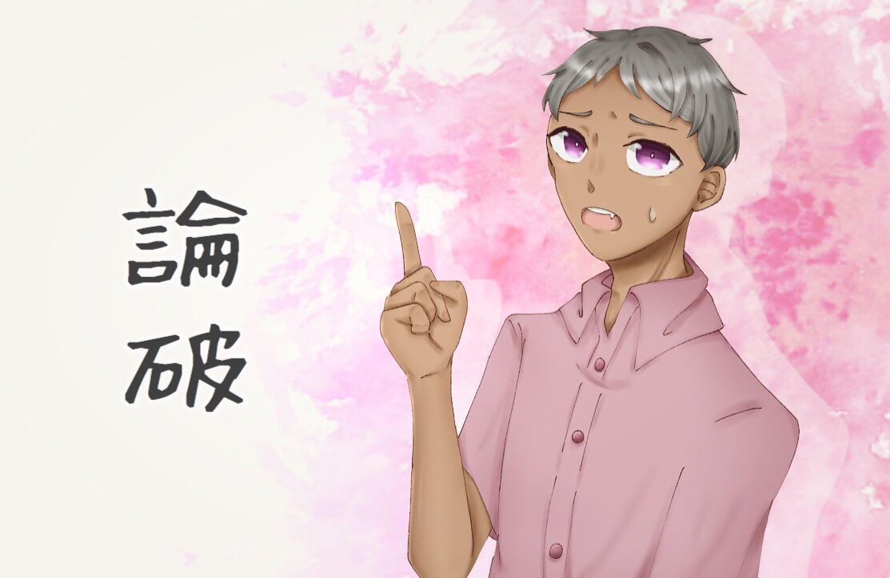
【P-2 同意】ハナコ
確かに！！！！
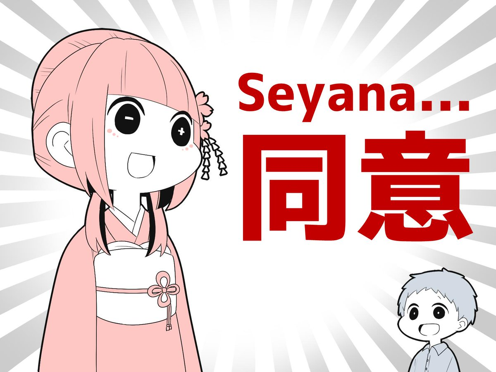
【P-3 自白】ハナコ
チーズを入れてマシンを爆発させたのは私です。ごめんなさい。
13時にチーズを入れたのち、いい感じに溶けるまで外を歩いていた。まさか爆発するとは思わなかった。
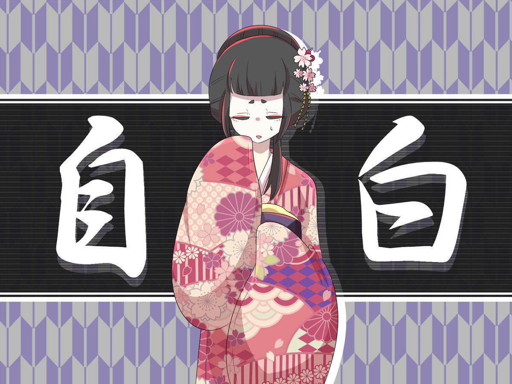
【COMPLETE!!】
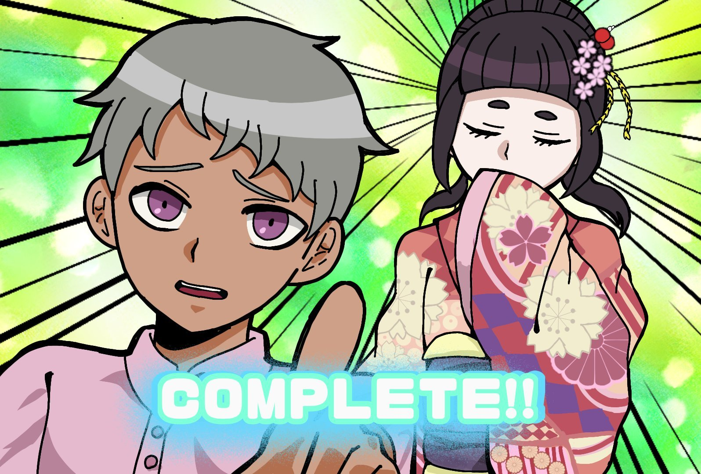
【おしおき】
【Q-4 提案】コマチ
レシピを見て、ハナコが好きなチーズ入りのカレーを作ってみたんだ。みんなで食べよう！
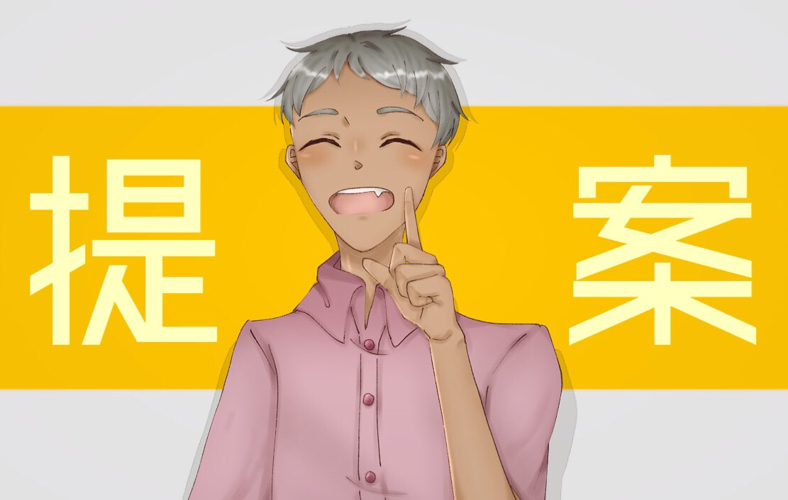